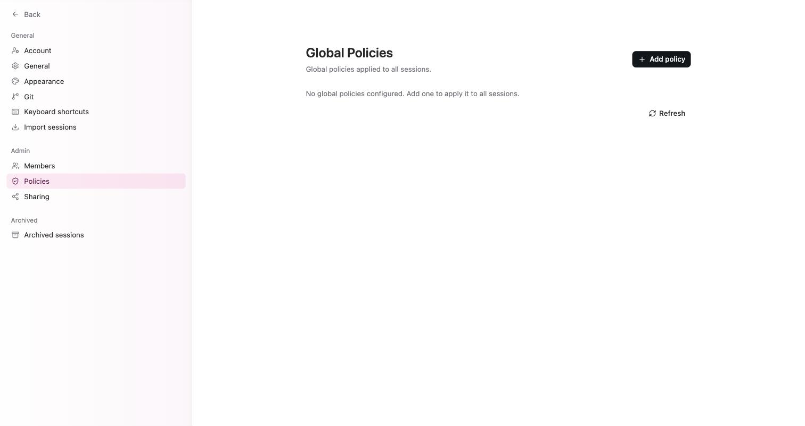
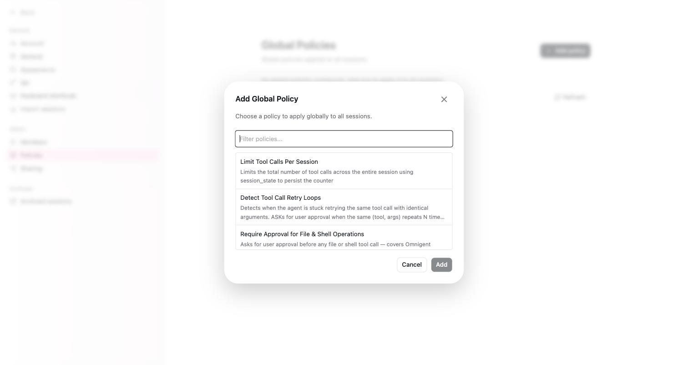

Policy 導覽：成本上限、敏感資料與危險指令
為何需要本章
代理跑在真的機器上，能真的執行指令、真的改檔案、真的花錢。這是 Omnigent 的價值，也是它的風險：一句話講得不夠精確，它可能刪掉不該刪的東西，或是用最貴的模型去做一件三秒鐘的雜事。
Omnigent 對這件事的答案是規則（Policy）：在代理動手之前先攔一道，該問的問你，該擋的直接擋掉。本章帶你把內建的二十五條規則看過一遍，知道它們分成哪幾類、哪幾條值得第一天就開。
先講最重要的事實：這套規則預設一條都沒有啟用。設定頁的 Policies 分頁標題是 Global Policies，說明寫著「Global policies applied to all sessions.」，而正式站目前顯示的是「沒有設定任何全域規則」的空狀態。沒有人幫你開，你不開就是全開放。

核心觀念：規則是攔截點，不是設定值
規則跟一般的「開關型設定」不一樣。開關是描述系統的狀態，規則是掛在事件上的判斷：代理每要呼叫一次工具、每收到一則訊息、每啟動一次，系統就把這個事件丟給你啟用的規則問一句「這個可以嗎」。
規則（Policy）：掛在代理行為上的攔截判斷。三種處置：放行、ASK（先停下來問你，你按核准才繼續）、DENY（直接擋，代理拿到的是被拒絕的結果）。
兩個推論值得先記住。第一，ASK 需要有人在旁邊按核准，所以會 ASK 的規則跟第 10 章的排程互相牴觸——排程是無人值守跑的，沒有人會去按那顆核准，該回合就卡在那裡。第二，規則是掛在全域的（Global Policies「applied to all sessions」），所以你開一條，是對這台上的所有 session 生效，不是只有你自己那些。
規則管的是「代理執行時能做到什麼」，第 11 章的角色管的是「人在介面上能改什麼」。兩者不重疊，也不互相取代：一個 Member 角色的使用者，照樣可以叫代理去執行破壞性的指令，除非有規則擋住。

二十五條規則的六個分類
按下 Add policy 之後看到的是一份目錄。條目本身沒有分組，是照固定順序列出來的，所以第一次看很容易被二十五條淹沒。下面這張表是本書替你做的分類，方便你決定從哪裡開始看：
| 分類 | 它在管什麼 | 大致條目 |
|---|---|---|
| 花費 | 用錢的總量與該不該用貴的模型 | Session Cost Budget、Per-User Daily Cost Budget、Deny Trivial Tasks on Expensive Models |
| 敏感資料與外部服務 | 個資外流，以及 Google、GitHub 這些帳號的存取範圍 | Deny PII in LLM Requests、Google Drive 與 Docs 與 Sheets、Gmail Access、Google Calendar Access、GitHub Repo & Branch Access |
| 指令與檔案 | shell 指令、檔案寫入、工作目錄的邊界 | Block Dangerous Shell Commands、Require Approval for File & Shell Operations、Restrict Writes to Git Worktree、Block Working Directory & Worktree Changes、Report-Only (Deny File Writes)、Enforce Sandbox on Agent Start |
| 行為偵測 | 代理鬼打牆、偏離任務、風險累積 | Detect Tool Call Retry Loops、Detect Agent Thrashing、Detect Task Switch、Intent Based Authorization、Session Risk Score |
| 用量與扇出 | 工具呼叫次數、子代理數量 | Limit Tool Calls Per Session、Limit Sub-Agent Dispatches Per Turn、Require Purpose on Sub-Agent Dispatches、Block Specific Skills |
| 自訂判斷 | 前面幾類都不夠時，自己寫判準 | CEL Expression Policy、LLM Prompt Classifier Policy |
目錄裡二十五條完整的名稱與逐條說明，收在本倉庫的實機記錄檔（見「固定來源」一節）。這裡不逐條抄，接下來三節挑出最值得第一天就處理的三組來講。
跟錢有關的三條
這三條是最容易看到效果、也最不會擋到正常工作的，通常是新環境的第一批。
| 規則 | 判準 | 什麼時候該開 |
|---|---|---|
Session Cost Budget | 以這個 session 累計的模型花費（美金）設閘，達到硬上限之後 DENY | 怕單一個失控的 session 一路燒下去 |
Per-User Daily Cost Budget | 以擁有者當日（UTC）跨所有 session 的累計花費設閘 | 多人共用，要按人設天花板 |
Deny Trivial Tasks on Expensive Models | 由伺服器端的模型判定這則訊息是瑣碎（TRIVIAL）或複雜（COMPLEX） | 大家習慣什麼都丟給最貴的模型 |
兩個實務提醒。第一，Per-User Daily Cost Budget 是按 UTC 的一天算的，台灣時間比 UTC 早八小時，所以額度重置會發生在台灣的早上八點，不是午夜。排程如果都壓在深夜跑，跨的是同一個 UTC 日，會共用同一份額度。
第二，這三條的效果要搭配第 13 章的 Usage 頁看。先看一週的實際花費長什麼樣，再決定上限要設多少；憑感覺設一個數字，不是太鬆等於沒開，就是太緊讓人一直撞牆。
資料與指令的邊界
第二組是真正在防「代理做了不該做的事」。它們比花費那組更容易誤傷正常工作，所以要邊開邊觀察。
Deny PII in LLM Requests：掃描使用者訊息與送往模型的請求裡的個資，包含身分證號、信用卡號、電子郵件與電話。要處理客戶資料的環境，這條的優先度僅次於花費那組。Block Dangerous Shell Commands：安全的指令放行，可回復的高風險指令走 ASK，不可回復的直接 DENY。這是「一句話講錯就刪掉東西」那個風險最直接的解法。Require Approval for File & Shell Operations：任何檔案或 shell 呼叫前一律先問。保護最完整，但也最煩，而且因為它會 ASK，開了之後排程任務會全部卡住。適合短期觀察，不適合長期掛著。Restrict Writes to Git Worktree：擋掉 worktree 以外的檔案寫入。跟第 7 章的工作區觀念是同一件事的兩面——把代理的可寫範圍收在它該動的那棵樹裡。Report-Only (Deny File Writes)：拒絕所有會改檔的工具，代理只能回報不能動手。拿來讓代理先做一輪純分析很好用，例如請它盤點問題但先不要修。- 三條 Google 服務規則與
GitHub Repo & Branch Access：透過對應的外部工具伺服器控管存取。其中Gmail Access的預設立場很值得參考——允許讀信與寫草稿，但擋掉寄出；Google Calendar Access預設唯讀。「讀可以、寫要擋」是外部服務規則的通用起手式。
Enforce Sandbox on Agent Start 這條會在每次代理啟動時強制指定沙箱設定（例如 linux_bwrap）。它的效果取決於那台機器上沙箱是否真的可用，跟部署方式高度相關。在你自己的環境開這條之前，先確認執行端支援，否則可能是所有 session 都起不來。
行為偵測與自訂判準
第三組不看單一動作危不危險，而是看一連串動作的形狀。它們解決的是另一種浪費：代理沒有做壞事，只是在原地打轉，而每一圈都在花錢。
Detect Tool Call Retry Loops：偵測代理用完全相同的參數重試同一個工具，重複到設定的次數就 ASK。Detect Agent Thrashing：用滑動視窗追蹤工具的執行結果，抓出反覆失敗的模式。跟上一條的差別是它看的是失敗率，不是參數是否一模一樣。Detect Task Switch：判斷新訊息是延續當前任務，還是已經切到另一件事。Intent Based Authorization：把 session 的第一則訊息當成權威意圖，後續行為必須符合那個意圖。這條配合第 8 章「一個 session 只做一件事」的習慣特別有效。Session Risk Score：由高風險工具呼叫與含敏感資料的結果累積一個分數。它不是單點攔截，而是讓「這個 session 越來越危險」這件事變成看得見的數字。
最後兩條是給前面都不夠用的情況：CEL Expression Policy 用運算式去評估每一個規則事件；LLM Prompt Classifier Policy 讓你用自然語言描述判準，由模型去判。後者寫起來最快，但它的判斷本身也是一次模型呼叫，成本與延遲都要算進去。
開始之前
三個前提：
- 你要是 Admin。
Policies跟Members、Sharing一樣是管理分頁，見第 11 章。 - 先有一週的用量資料再設金額。沒有 Usage 頁的數字當底，上限只能亂猜。第 13 章教你怎麼讀那些數字。
- 先想清楚你要 ASK 還是 DENY。ASK 需要有人在場按核准；如果這台上有排程任務在跑，ASK 型的規則會讓它們永遠等不到人。這是本章最常見的自傷。
另外要有心理準備：Add policy 對話框裡每一條規則各自有自己的參數欄位（次數上限、金額、名單之類），這些欄位的細節不在 2026-09-09 的實機記錄裡，本書不逐條描述。你在對話框裡看到什麼就填什麼，本章負責的是幫你挑對條目。
開出你的第一條規則
-
先確認現在是空的
開設定，切到
Policies。標題是Global Policies，說明是「Global policies applied to all sessions.」。全新的環境這裡會顯示沒有任何全域規則的空狀態——看到空狀態不要以為壞掉了，那就是預設。順手按一下Refresh確認畫面是最新的。 -
從一條純觀察、不擋人的規則開始
按
Add policy，在目錄裡挑Session Cost Budget。理由是它的行為最好預測（超過金額才 DENY），不會在你還不熟悉的時候把日常工作擋掉。金額先設一個「明顯高於正常、但低於你會心痛」的數字，例如你觀察到的單一 session 平均花費的五到十倍。 -
存檔後回列表確認它真的在
回到
Global Policies列表，空狀態應該被剛才那一條取代。這一步不能省：規則是全域生效的東西，「我以為我存了」跟「它真的在」差很多。 -
用一個測試 session 撞一次看看
把上限暫時調到極低（低到你隨便問一句就會超過），開一個測試 session 跑到超標，確認它真的被 DENY，而且你在畫面上看得懂那是規則擋下來的、不是模型壞了。確認完再把上限調回正常值。沒有撞過一次的規則，不能算你知道它會怎麼表現。
-
一次只加一條，中間留幾天
接著再依序考慮
Per-User Daily Cost Budget、Deny PII in LLM Requests、Block Dangerous Shell Commands。每加一條就留幾天觀察有沒有誤傷。一次開五條、然後遇到怪現象不知道是哪條造成的，是這一章最常見的失敗方式。
怎麼確認做對了
Global Policies列表上看得到你剛才那一條，而且不再是空狀態。- 刻意撞上限的那個測試 session 真的被擋下來，而不是照常跑完。沒被擋就是規則沒生效或參數填錯。
- 把上限調回正常值之後，一個普通的 session 從頭到尾不受影響。開了規則就再也做不了事，代表參數太緊。
- 如果這台上有排程任務，隔天去看它們有沒有正常完成。卡在等待核准，通常就是你不小心開了會 ASK 的規則。
故障排除
- 徵狀：
Policies頁面空的，以為壞了。空是預設值，不是故障。正式站目前也是空的。內建目錄有二十五條，但那是「可以加的清單」，不是「已經生效的清單」，兩者差在你有沒有按Add policy。 - 徵狀：排程任務全部停在等待核准。你開到了會 ASK 的規則。排程是無人值守執行的，沒有人會去按核准。把那條改成 DENY 型的判準，或改用不需要人回應的規則；同樣的道理也適用於第 10 章提醒的執行模式設定。
- 徵狀：規則明明開了，代理照樣做了那件事。先看你開的那條的判準到底在攔什麼。舉例來說，
Restrict Writes to Git Worktree攔的是 worktree 以外的寫入，它不會擋讀取；Report-Only (Deny File Writes)擋的是會改檔的工具，不擋 shell 查詢。條目名稱相近但攔截點不同，是最常見的誤會來源。 - 徵狀：開了規則之後每次回應都變慢、成本反而變高。檢查是不是用了需要模型判斷的那幾條（
LLM Prompt Classifier Policy、Deny Trivial Tasks on Expensive Models、Detect Task Switch）。它們的判斷本身就是一次模型呼叫。省錢的規則自己也要花錢，開之前先想清楚划不划算。 - 徵狀：開了
Enforce Sandbox on Agent Start之後 session 起不來。這條會強制套用指定的沙箱設定，如果那台執行端沒有對應的沙箱支援，代理啟動就會失敗。先把這條停掉確認症狀消失，再回頭確認該機器的環境，相關背景見第 15 到 18 章。
固定來源
本章的產品邊界說法以下列來源的該 commit 內容為準。
二十五條規則的名稱與逐條說明、Global Policies 頁的標題與空狀態，來自 2026-09-09 對正式站的實機記錄，整理在本倉庫的 docs/research/ui-facts-2026-09-09.md。各條規則在 Add policy 對話框中的參數欄位不在該記錄範圍內，本章因此沒有逐條描述。
常見問題
到底有幾條內建規則？
實機在 Add policy 對話框裡數到的是二十五條。網路上與早期素材裡流傳的「二十六條」與實機不符，本書以實機為準。更重要的是那個數字不影響你的決定：目錄再長，預設也是一條都沒啟用。
規則是對整台生效，還是只對我自己的 session？
這一頁叫 Global Policies，說明文字寫的是「applied to all sessions」，所以是對這台上的所有 session 生效。這也是為什麼它被歸在管理類分頁、而不是個人偏好。要做人均差別待遇，目前看得到的做法是挑本身就以使用者為單位判準的規則，例如 Per-User Daily Cost Budget。
第一次上線建議開哪幾條？
本書的建議順序是：Session Cost Budget（單一 session 的上限）、Per-User Daily Cost Budget（人均當日上限）、Deny PII in LLM Requests（如果會碰到客戶資料）、Block Dangerous Shell Commands（如果代理有 shell 權限）。一次加一條，中間留幾天觀察。避開 Require Approval for File & Shell Operations 這種一律 ASK 的規則，除非你確定這台上沒有排程任務。
ASK 跟 DENY 我該選哪一個？
看有沒有人在旁邊。你自己坐在螢幕前互動的 session，ASK 比較好：它保留了例外處理的空間，你判斷一下就放行。無人值守的排程任務只能用 DENY：ASK 會停在那裡等一個永遠不會出現的核准，結果是任務靜靜地卡住，而你要到隔天才發現。
規則會不會擋掉代理正常的工作，讓它變笨？
會，如果你設得太緊。這就是為什麼建議一次只加一條並觀察幾天：出問題時你才知道是哪一條造成的。從「只在極端情況才觸發」的參數開始，例如上限設在正常值的五到十倍，之後再依實際狀況慢慢收。太緊的規則的下場通常不是更安全，而是有人乾脆繞過整套流程。